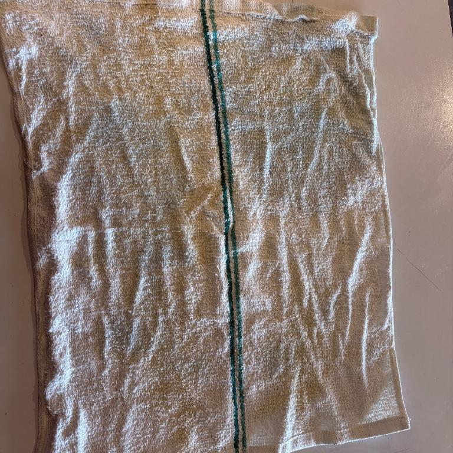
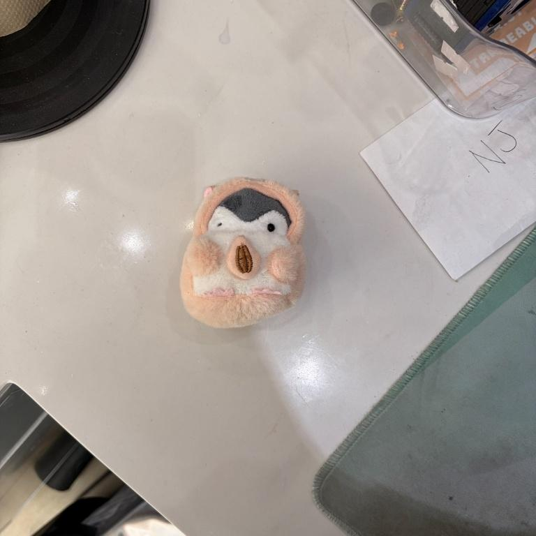
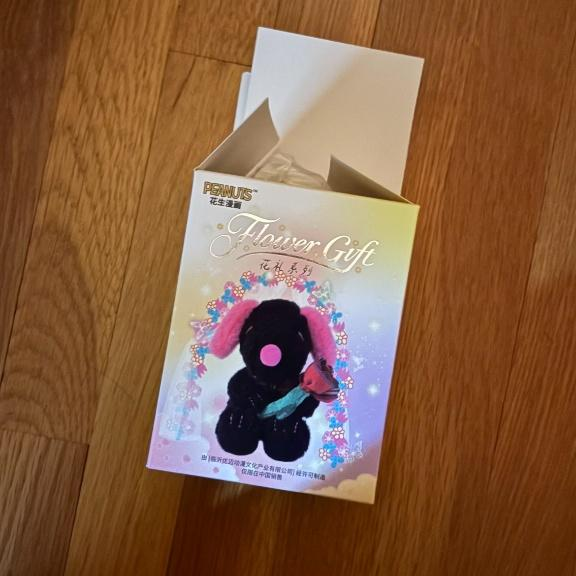
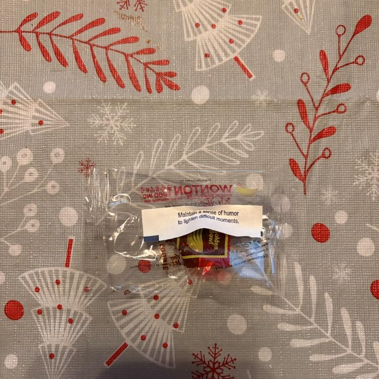

This project is inspired by the work of Newman, Muniz, and William Rathje.
As Spring Semester 2026 begins, recording my trash shows my habits. Through the pictures, you may be able to see:
Working two jobs there is a contrast. One arcade, one restaurant.
This section includes a used rag, that will be disposed of in a bin where the company we gather supplies from will take them back and reuse them. Another thing shown is a ball of foil.
With our products within the claw machines, there may be some defects within some plushies. In this case we have a penguin sadly missing its eye.
My new hobby of DJing provides a vast amount of products and equipment. Here is the process of my recent upgrade:
I found out this week my car was leaking coolant!

This week, I celebrated my monthiversary with my partner! I gifted her a Snoopy flower blind box.
We also visited a restaurant owned by our friend’s family, Baan Ta!
Follow on Instagram @jeydan.solo for more!